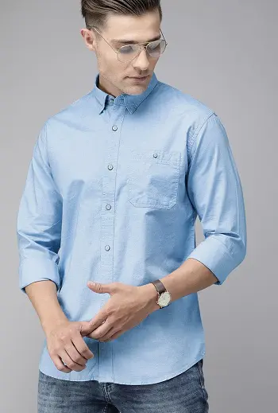
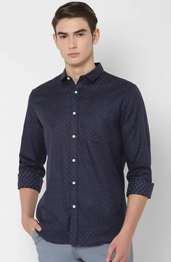
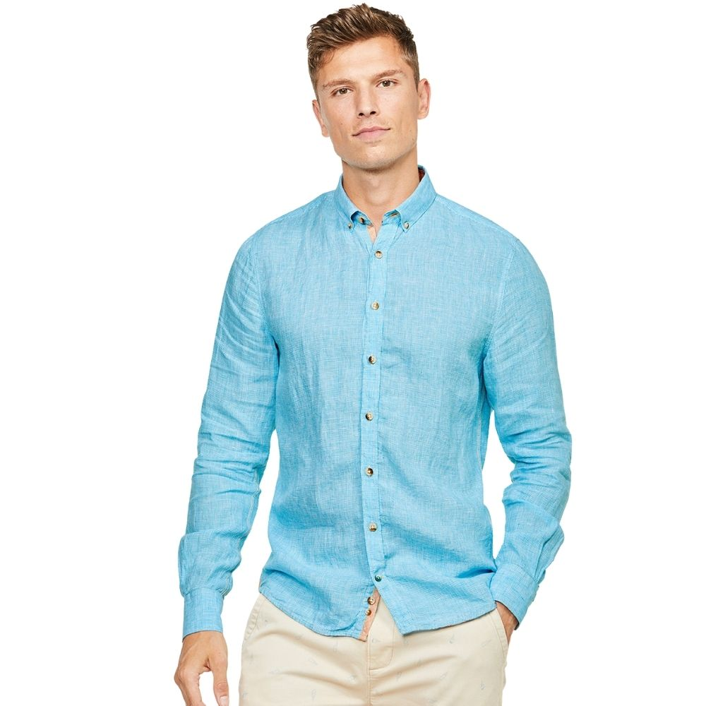

The world's oldest preserved garment, discovered by Flinders Petrie, is a "highly sophisticated"
linen shirt from a First Dynasty Egyptian tomb at Tarkan, dated to c. 3000 BC: "the shoulders and
sleeves have been finely pleated to give form-fitting trimness while allowing the wearer room to move.
The small fringe formed during weaving along one edge of the cloth has been placed by the designer to
decorate the neck opening and side seam.

The shirt was an item of clothing that only men could wear as underwear, until
the twentieth century.Although the women's chemise was a closely related garment
to the men's, it is the men's garment that became the modern shirt. In the Middle Ages,
it was a plain, undyed garment worn next to the skin and under regular garments.
In medieval artworks, the shirt is only visible (uncovered) on humble characters,
such as shepherds, prisoners, and penitents.[4] In the seventeenth century, men's
shirts were allowed to show, with much the same erotic import as visible underwear today

The shirt sometimes had frills at the neck or cuffs. In the sixteenth century,
men's shirts often had embroidery, and sometimes frills or lace at the neck and
cuffs and through the eighteenth-century long neck frills,or jabots, were fashionable.
Coloured shirts began to appear in the early nineteenth century, as can be seen in the
paintings of George Caleb Bingham. They were considered casual wear, for lower-class workers only,
until the twentieth century. For a gentleman, "to wear a sky-blue shirt was unthinkable in 1860,
but had become standard by 1920 and, in 1980, constituted the most commonplace event.